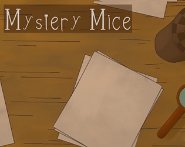

Mystery Mice
Mystery Mice es un juego cooperativo de puzzles en el que tendrás que resolver el misterio que se esconde en el pueblo. Un viejo espíritu atormenta a los habitantes y el misterio oculto entre ellos. Mediante el uso de tus poderes en combinación con los de tu compañero habrá que resolver una serie de pruebas para llegar al final del misterio.
Jugar